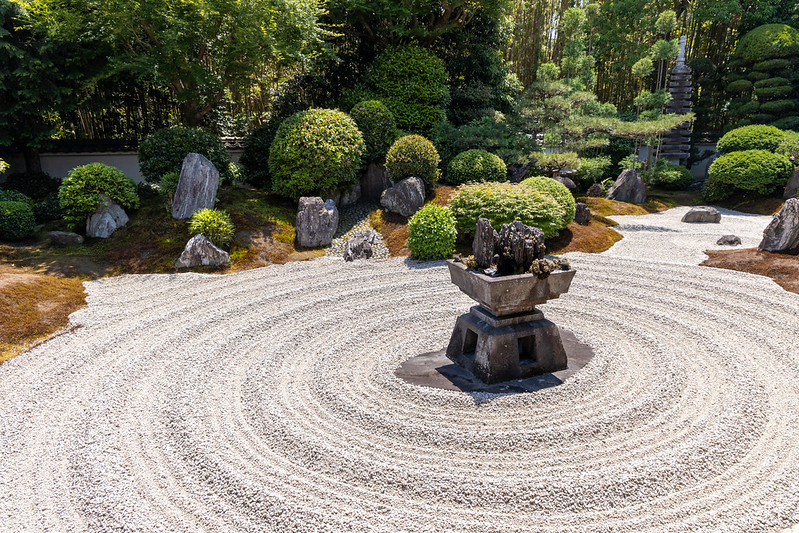
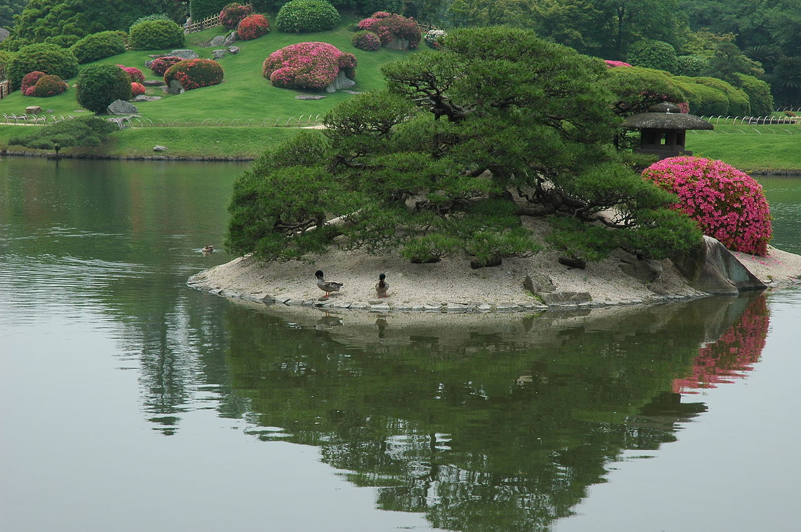
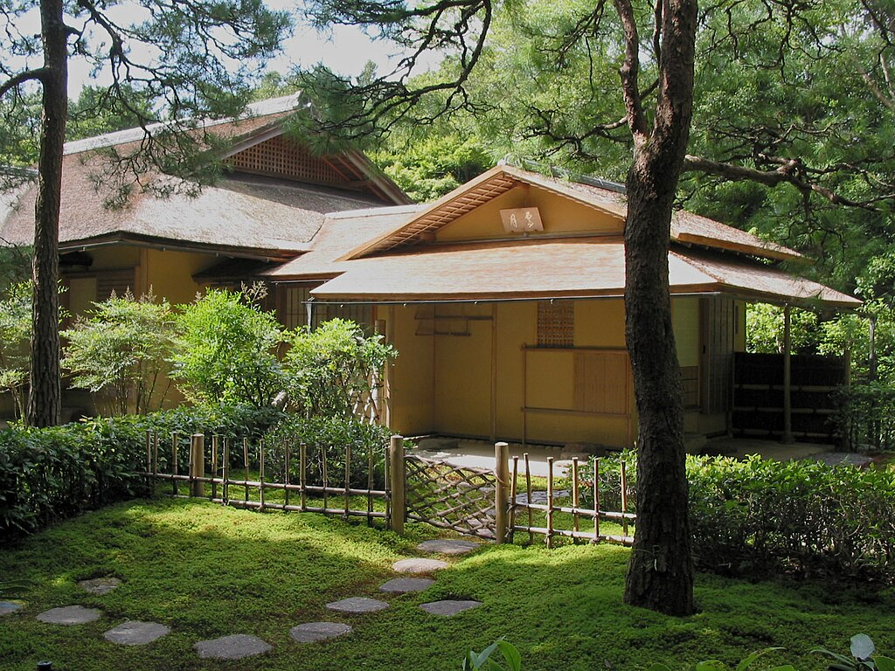
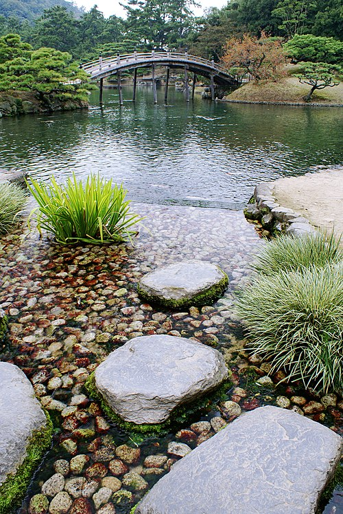
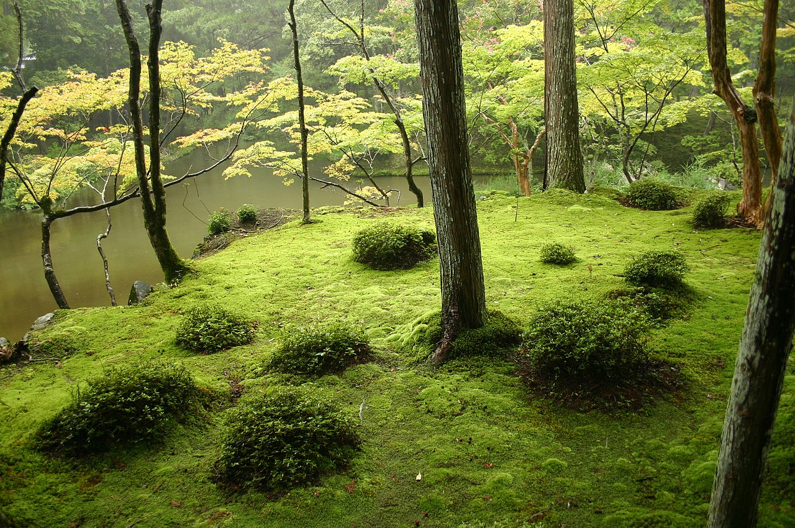

STYLES
Garden Styles
Karesansui (Dry Gardens): Also called Zen gardens, these are minimalist spaces composed of rocks, gravel, and a few carefully placed plants. The raked gravel represents water, and the overall effect encourages deep meditation. These gardens are typically found at Zen temples.
Chisen-shoyū-teien (Pond-centered Gardens): Designed around a central pond and often viewed from a boat. Popular among Heian-era aristocrats, these gardens reflected a luxurious lifestyle and a deep appreciation for seasonal beauty.
Roji (Tea Gardens): Created as a path leading to a teahouse, the roji is a modest, mossy garden designed to calm the visitor’s mind before the tea ceremony. Every step and stone serves a purpose, promoting mindfulness and humility.
Kaiyū-shiki-teien (Promenade Gardens): These are large gardens meant to be walked through along a circular path. Each turn reveals a new scene, carefully composed to offer varying perspectives and emotional tones.
Tsubo-niwa (Courtyard Gardens): Tiny gardens found within private homes, shops, or temples. Despite their size, they aim to create a quiet atmosphere and visual depth, often with just a few elements—such as a lantern, a tree, and moss.
